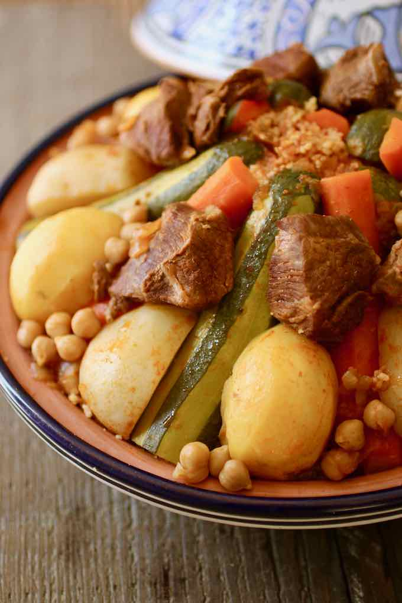

Tunisian Couscous Recipe

Description
The couscous is the trademark of the Maghrebi cuisine. Being a national dish in Tunisia. But also in Libya and
Algeria, as well as Morocco and Mauretania. Tunisian couscous is one of the countless variations of this
delicious
and versatile dish.
Couscous is traditionally steamed in a couscous steamer (couscoussier) to produce softer, larger grains.
Nowadays, the couscous grain (semolina) that is sold in most supermarkets in the western world is pre-steamed
and then dried.
What makes Tunisian Couscous rather unique in comparison to other variants, is it's use of sauce is always red,
because of the tomato or tomato sauce that is used and the use of paprika while cooking.
Ingrediants
- 2 lb lamb stew meat, cut into large pieces
- 6 cups couscous fine semolina (or medium)
- 2 onions finely chopped
- 2 clove garlic, pressed
- 4 tbsp tomato paste
- 6 small potatos, peeled
- 4 turnips, cut in half
- Some olive oil
- 2 tbsp ground caraway
- 1 tbsp chili powder
- 4 zucchini, peeled lengthwise, alternately leaving a layer of skin
- 10 oz chickpeas (canned)
- Salt & pepper
Equipment
Steps
- Add ½ cup (120ml) of oil into a large pan. Fry the onion over medium heat for 2 minutes.
- Add the garlic, tomato paste and continue frying for 2 minutes.
- Add the caraway, coriander, and chili powder. Mix and continue cooking for another 2 minutes.
- Add the lamb meat and mix well so that the pieces are covered with the sauce. Cook for 5 minutes stirring
regularly.
- Cover with water. Add the turnips and carrots, and cook on low/medium heat for 45 minutes.
- Meanwhile, prepare the couscous semolina as indicated on the package, with boiling water, salt, and oil.
- After 45 minutes, add the zucchini, potatoes and chickpeas.
- Cook for at least another 30 to 40 minutes over low to medium heat. Monitor the cooking of the vegetables.
If some vegetables are cooked before the meat, remove them from the pan and place them on a serving platter.
Proceed in the same way with all the vegetables to prevent them from cooking too much.
- 10 minutes before the end of cooking, get a few ladles of broth (one at a time) and wet the couscous
semolina. Mix the semolina well after each ladle until it gets moistened enough.
- Arrange the semolina in a tajine pot. Decorate the dish with the vegetables and the meat all around. Garnish
with fried green hot peppers (optional).